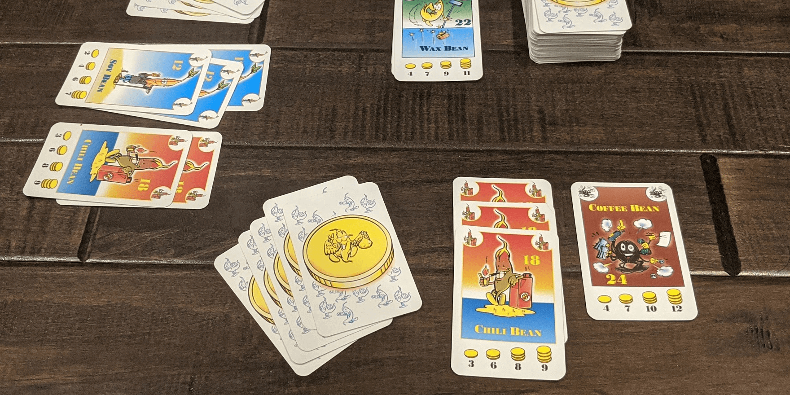

If you like Settlers of Catan, try these 3 games


Settlers of Catan is a classic strategy game that combines resource management, conquest, and good old-fashioned luck. Catan is often one of the first board games that people play, and for good reason - it's simple, quick to set up, and is fun for beginners and veterans alike.
If you're looking for another game to play after Settlers, consider these games that share similar gameplay mechanics while providing a new experience.
Concordia


Concordia plays like an advanced version of Settlers of Catan with less luck. Players explore a map of the Mediterranean Sea and form settlements that provide resources - bricks, wheat, tools, wine, or cloth. However, the players decide which settlements produce, instead of a dice roll
Everyone in Concordia starts with the same 6-card hand and plays one card each turn. One card lets you move around the map and build settlements, one lets you sell goods, and another causes settlements to produce resources. However, cards go into your discard pile once they are played. You'll have to spend a whole turn to draw your hand back up, so plan efficiently!
Throughout the game, players may also buy new cards to unlock more actions that change the flow of the game. This means that each player will have a different set of cards, making each game of Concordia new and interesting.
This is definitely a game to check out if you are ready to play something more complex than Catan. Concordia takes longer to play, but it will open the door to other great strategy games!
Buy Concordia on Amazon
Bohnanza
At a glance, Bohnanza is a very different game from Settlers of Catan. If you enjoy the resource trading aspect of Catan though (two sheep for one wood, anyone?), Bohnanza won't disappoint - it's all about trading beans!
Bohnanza is a simple card game that plays loosely like Go Fish. Players draw cards from a huge deck containing 17 types of beans, and they then haggle and trade with each other. Shouting may occur. It goes something like this:
Sam: "Anybody got Wax Beans? I've got Green Beans"
Felicia: "Does anybody want 2 Chili Beans?"
Sam: "Does ANYBODY have wax beans??"
Alan: "Uhh yeah I'll give you a Black Eyed Bean for those Chili Beans"
Sam: "I NEED WAX BEANS"
At some point you'll realize that you can't get any more damn Wax Beans, Chili Beans, or Green Beans off of your friends, and you'll have to sell them for money. The more beans you sell of one type, the more they'll be worth. You may be tempted to hold on to your beans in hopes of getting even more, but you can only grow two types at once!
Bohnanza is a unique strategy game that makes negotiation a fun and frequent occurrence. Trading is not required in Catan, and some players outright avoid trades altogether. If you're looking for a game where trading is an integral part of the gameplay, give Bohnanza a try.
Buy Bohnanza on Amazon
Tiny Towns
Tiny Towns is a tricky puzzle game in which you use resources to construct buildings in your town square. You play on your own 4x4 grid, and on your turn, you will choose a material - Hay, Brick, Wood, Stone, or Glass. The cool part is that everyone else also takes this resource, and you individually decide where to place it on your board. You will all get an equal number of resources, but you can't control what your opponents will pick, so it becomes challenging to plan out your town.
You spend the resources according to recipes to make buildings that score points in unique ways. When materials on your board match a pattern, you may discard those materials to construct that building. For example, Cottages score points anywhere they are placed, but only if fed by a Farm. Tailors score points if they're next to other Tailors, and Cloisters score points if they're placed in the corners.
Buildings take up one space each, and you'll quickly run out of room for new resources and buildings. If you get stuck and can't place another piece, your town is complete and you wait for the others to finish. Hopefully you fill up most of your town with buildings, as empty spaces cost you points at the end of the game!
Tiny Towns is more straightforward than Catan, but it adds an element of abstract strategy that makes it quite challenging. Learning the rules is easy, but mastering Tiny Towns will be difficult! This is a great option if you're looking to add a puzzle game with a fun theme to your collection.
Buy Tiny Towns on Amazon